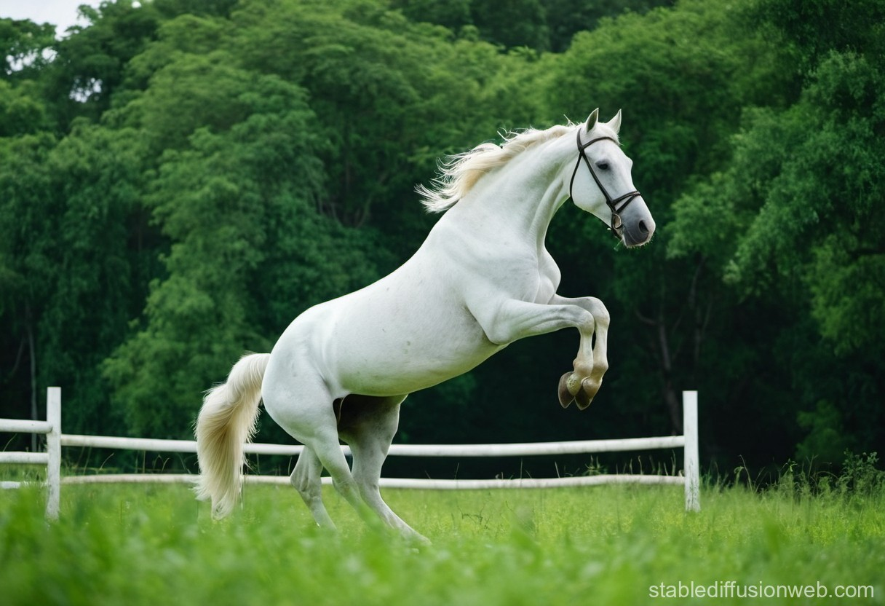

Horses are magnificent, intelligent animals that belong to the Equidae family. Domesticated over 5,000 years ago, they have played a pivotal role in human history, serving as companions, laborers, and sources of transportation. With a strong, muscular build, horses are known for their speed and agility, making them exceptional athletes. They come in various breeds, each with distinct characteristics, such as the powerful Clydesdale, the swift Thoroughbred, and the versatile Quarter Horse, showcasing the incredible diversity within the species,
Horses are herbivores, primarily feeding on grasses, hay, and grains. Their digestive system is designed for a high-fiber diet, with a large cecum that aids in breaking down tough plant materials. Social animals by nature, horses live in herds and exhibit strong social structures. They communicate through a variety of vocalizations and body language, forming bonds with one another and with humans. This social behavior not only contributes to their well-being but also plays a key role in their training and interaction with riders,
Beyond their practical uses, horses have deep cultural significance in many societies. They appear in mythology, art, and literature, symbolizing freedom, strength, and grace. The relationship between humans and horses has evolved over time, from workhorses in agriculture to companions in recreational riding and competitive sports. Today, horses are celebrated not only for their utility but also for their beauty and the joy they bring to millions of people worldwide, serving as a testament to the enduring bond between humans and these remarkable creatures.
|
 |